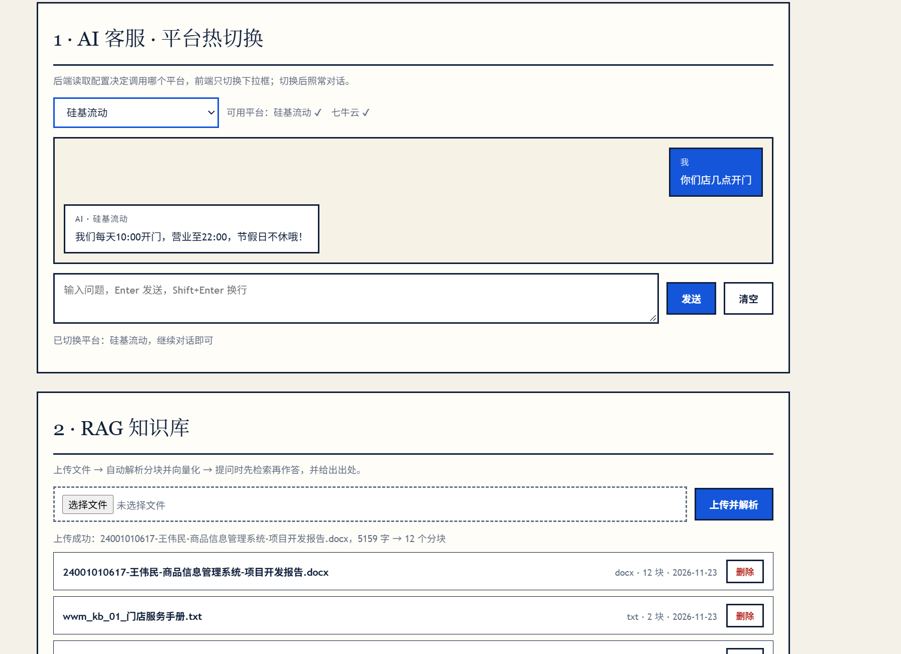
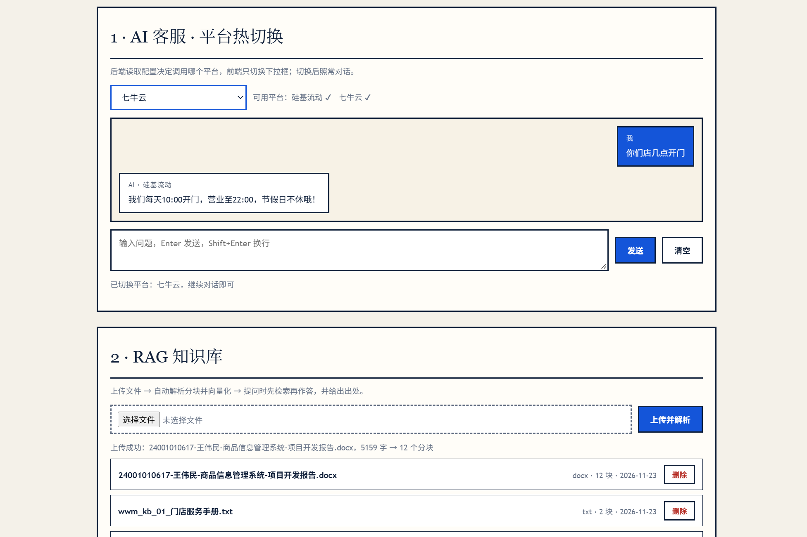
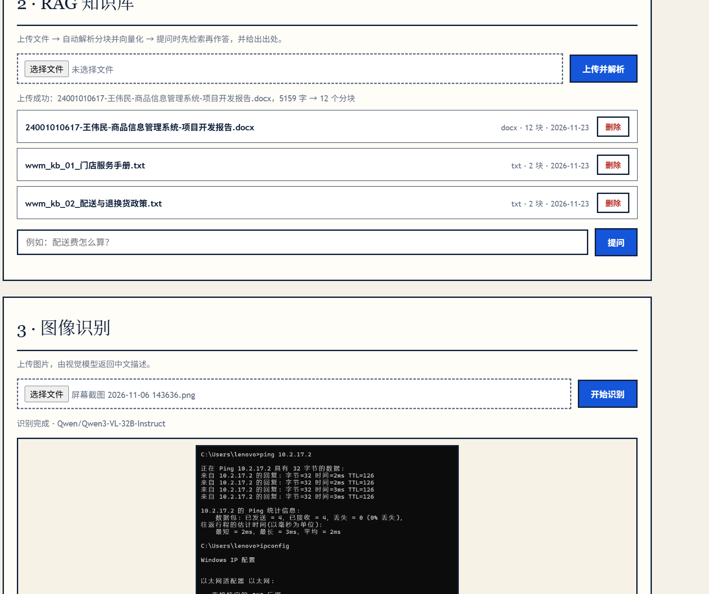
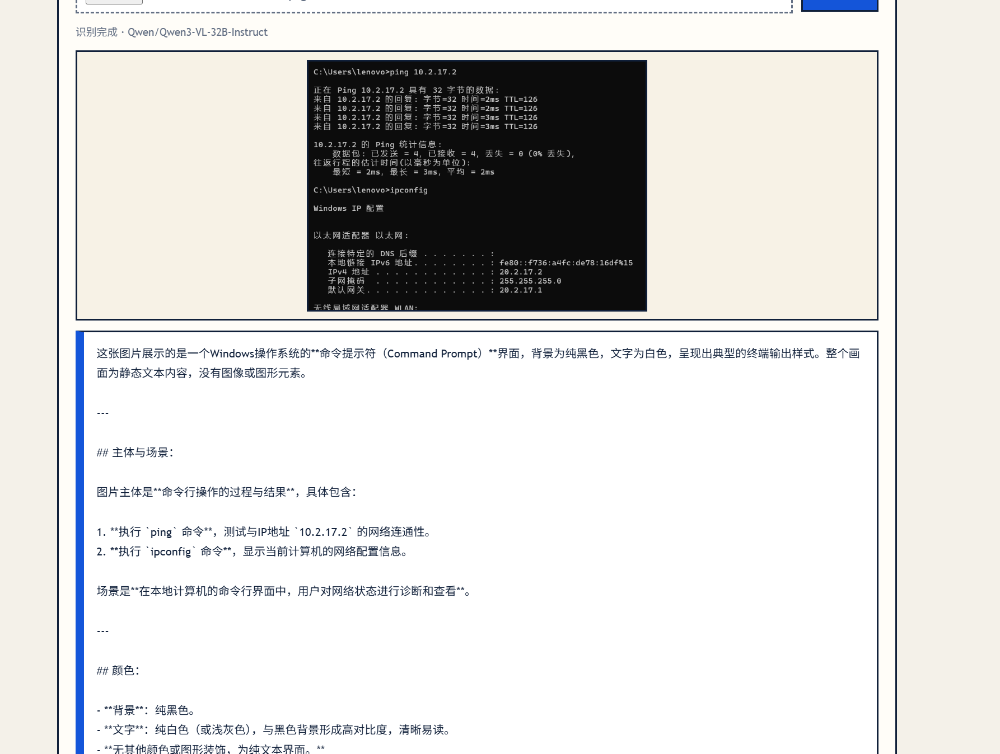
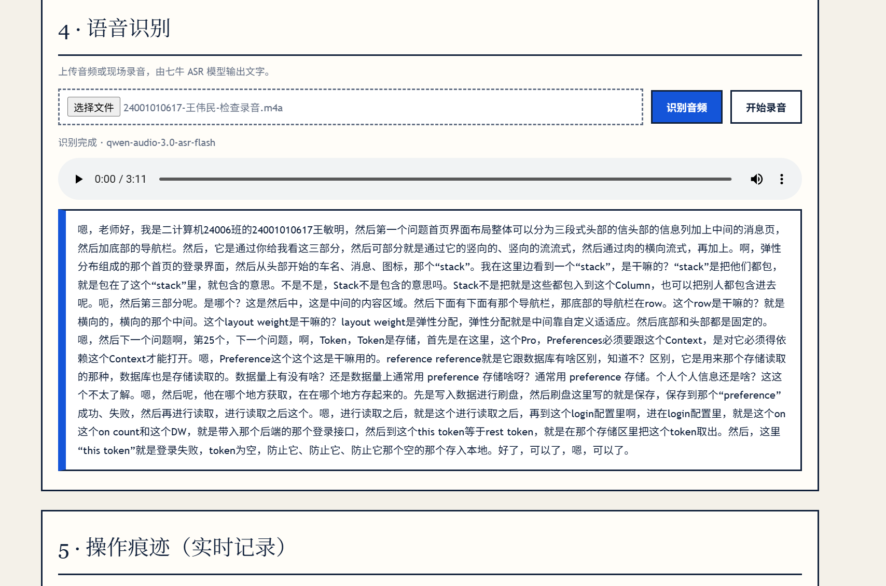
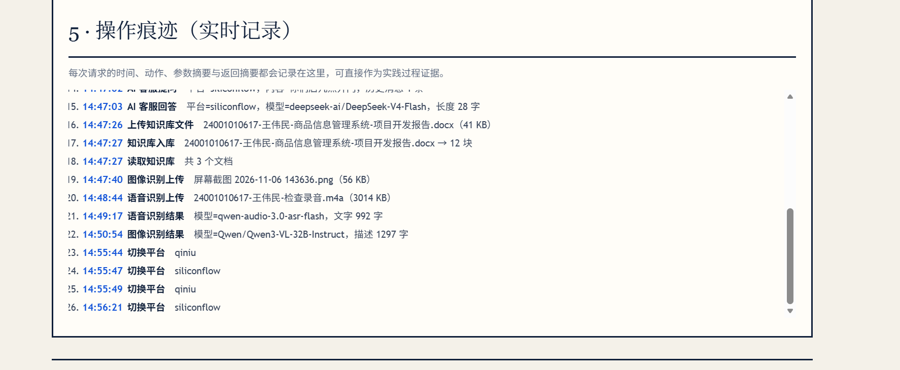

LLM Practice Trace
LLM 实践操作痕迹展示
AI 客服平台热切换 · RAG 知识库 · 图像识别 · 语音识别 —— 每一项操作都会实时写入下方「操作痕迹」。
0 · 后端服务地址
页面是静态的，所有 AI 能力都由后端代发请求（Key 保存在后端，不进前端代码）。
1 · AI 客服 · 平台热切换
后端读取配置决定调用哪个平台，前端只切换下拉框；切换后照常对话。
先问一句试试，例如「你们店几点开门？」
2 · RAG 知识库
上传文件 → 自动解析分块并向量化 → 提问时先检索再作答，并给出出处。
正在读取知识库…
3 · 图像识别
上传图片，由视觉模型返回中文描述。
4 · 语音识别
上传音频或现场录音，由七牛 ASR 模型输出文字。
5 · 操作痕迹（实时记录）
每次请求的时间、动作、参数摘要与返回摘要都会记录在这里，可直接作为实践过程证据。
6 · 实践截图存档
以下截图取自真实操作过程（本地后端 + 真实模型调用），点击图片可查看大图。





